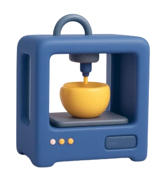

Diseño gráfico y Branding
Te ayudamos a construir y mantener la identidad de tu marca, a comunicar y transmitir los valores de la misma desde la creación del isologotipo como así también del nombre y aspectos esenciales que la definen (colores, tipografías, personalidad, mensajes, posicionamiento).
Cuidamos tu marca